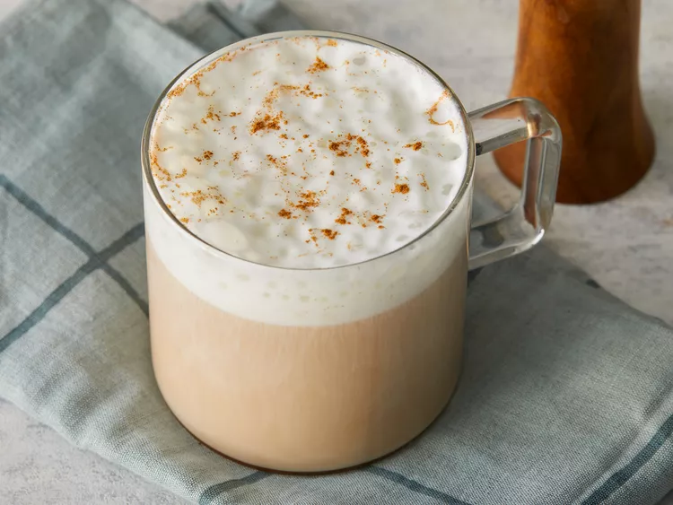
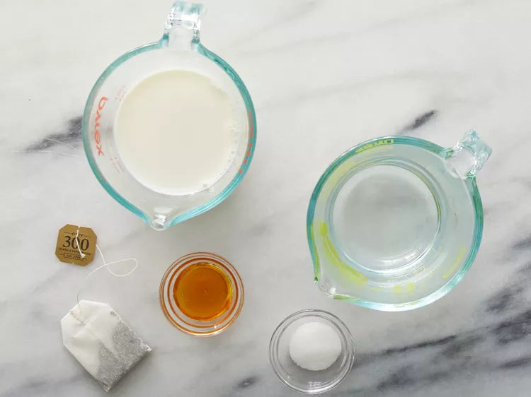
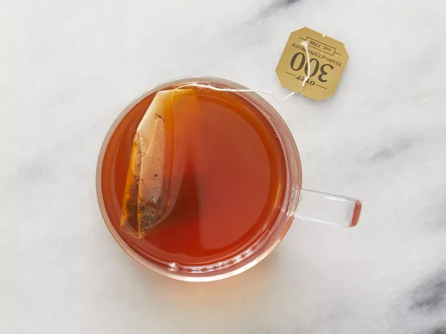
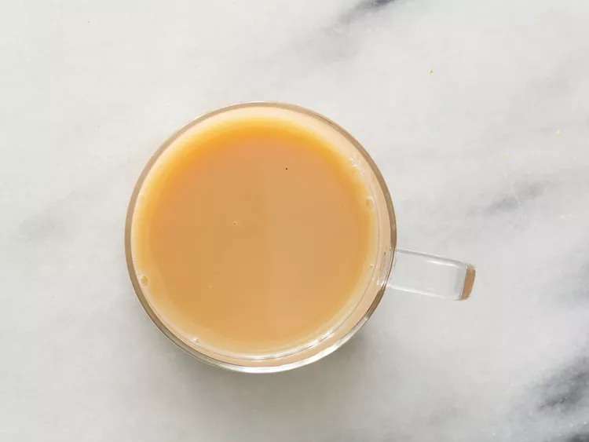

Chai Tea Latte

This milky chai tea latte is really similar to the brand Oregon Chai.
Simply delicious either hot or iced! This will save you more money than
buying the chai. In India, each family has their
own way of making it, so you should experiment to find your favorite blend.
Ingredients
- ¾ cup boiling water
- 1 chai tea bag
- 1 ½ teaspoons honey
- 1 teaspoon white sugar
- ¾ cup milk
Directions
- Gather all ingredients.

-
Pour boiling water over chai tea bag in a mug;
let steep 4 to 6 minutes. Remove and discard tea bag.

-
Stir honey and sugar into tea to dissolve. Stir milk through tea to serve.

Home